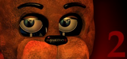

Five Nights at Freddy's
Five Nights at Freddy's é uma série de jogos de terror onde o jogador assume o papel de um vigilante noturno em uma pizzaria cheia de animatrônicos. Esses animatrônicos ganham vida à noite e perseguem o jogador. A história envolve mistérios, desaparecimentos e eventos trágicos, com muitos personagens e teorias que os fãs exploram. Se quiser, posso delves mais em algum aspecto específico!
No primeiro Five Nights at Freddy's, você joga como Mike Schmidt, um segurança noturno na Freddy Fazbear's Pizza. Seu objetivo é sobreviver até 6 da manhã, monitorando câmeras e gerenciando a energia enquanto animatrônicos, como Freddy, Bonnie e Chica, tentam atacá-lo. O jogo introduz a atmosfera tensa e a narrativa envolvente da franquia.
Five Nights at Freddy's 2
Five Nights at Freddy's 2 conhecido por FNAF 2 é o segundo jogo da franquia de terror criada por Scott Cawthon, lançado em 2014. O jogador assume o papel de Jeremy Fitzgerald, um segurança noturno na nova Freddy Fazbear's Pizza. O objetivo é sobreviver a cinco noites enquanto enfrenta novos animatrônicos, incluindo Toy Freddy, Toy Bonnie, Toy Chica, Mangle e Balloon Boy, que se tornam hostis à noite.

O gameplay envolve monitorar câmeras, fechar portas e usar uma máscara de Freddy para enganar os animatrônicos. Com uma atmosfera tensa e elementos de jumpscare, FNAF 2 aprofunda o lore da série, revelando segredos sobre os animatrônicos e a pizzaria. O jogo foi bem recebido, elogiado por suas mecânicas e desenvolvimento da história, consolidando a popularidade da franquia.